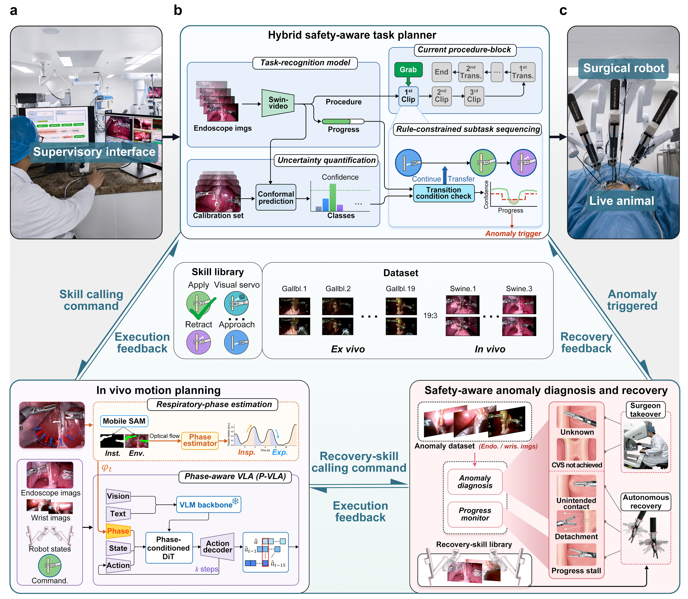

We would like to thank Ruijin Hospital for its support and collaboration.
Team
Names are listed in no particular order.

Fan Qiao

Meng Guo
advisor
Enabling an endoscopic surgical robot driven by an embodied foundation model to autonomously conduct complex, long-horizon surgery in living animals while prioritizing safety remains challenging. Existing studies on autonomous surgery have separately investigated automated manipulation and task recognition, rather than integrating them into long-horizon task execution, while often overlooking medical-domain rules that provide critical safety constraints for end-to-end methods. Here we present SharpSurg, a safety-aware surgical robotic assistant integrating autonomous workflow planning, dexterous execution and anomaly management. A dedicated task-recognition model and temporal rules govern procedure-subtask planning, whereas execution invokes surgical skills implemented by a foundation vision–language–action (VLA) model fine-tuned on surgical demonstrations. Its phase-conditioned VLA estimates respiratory phase information from endoscopic observations to adapt action generation to respiration-driven soft-tissue deformation. We collected multimodal surgical data from surgeon demonstrations on ex vivo tissues and living animals, together with data of intraoperative anomalies, to construct datasets for model development and evaluation, including testing in unseen scenarios and uncertainty quantification. Throughout surgery, surgeons can use a dedicated software interface to monitor task execution and the system’s autonomous anomaly monitoring, diagnosis and recovery. Across in vivo cholecystectomy studies involving three pigs, SharpSurg achieved a 100% success rate (75/75). Ablations showed that enforcing subtask-completion criteria increased the valid transition rate by 43% (from 65.5% (57/87) to 94.3% (82/87)). SharpSurg correctly identified all 41 tested anomaly events spanning 5 anomaly scenarios, autonomously recovered from known anomalies using pretrained recovery skills, and correctly escalated unknown or predefined takeover events, achieving an overall anomaly-management success rate of 100% (41/41). Together, these results show that integrating foundation-model skills with rule-guided task progression, physiological conditioning and autonomous anomaly management supports reliable, safety-aware long-horizon robotic surgery.

Ex Vivo Autonomous Surgery
In Vivo Autonomous Surgery
Names are listed in no particular order.
Fan Qiao
Meng Guo
advisor
We would like to thank Ruijin Hospital for its support and collaboration.